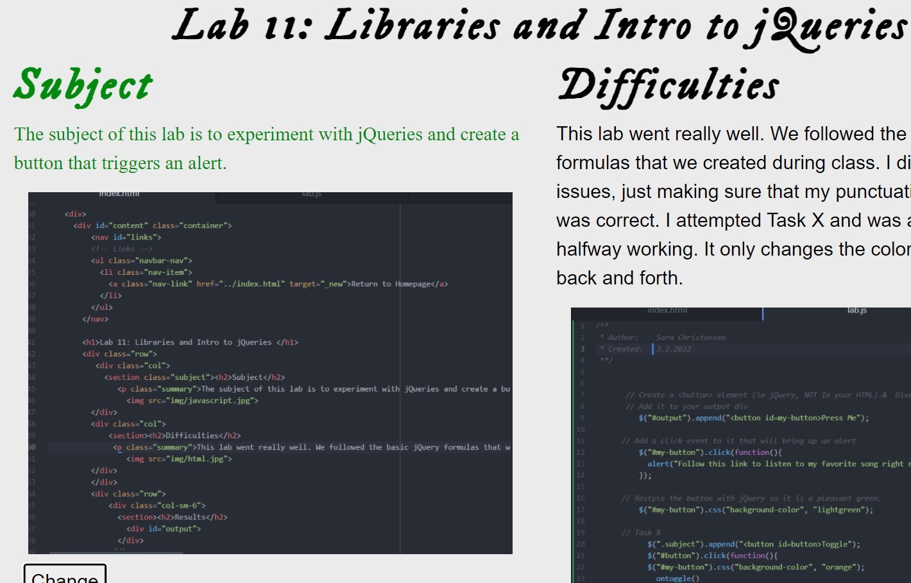
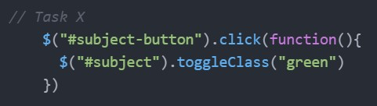

Lab 15: Debugging
Subject
The subject of this lab is to write functions that take user input and manipulate a string.
Difficulties
The only difficulty I had was comprehension. During class I understood what each function was doing and the step by step process. For the lab, I hesitated in knowing where to start. Looking at the example, I understood what was happening, but didn't know how to apply that to my own JavaScript. Once I started mapping out the function like we did in class, it became easier.
Results
I was able to create functions and define variables, strings, and arrays so that they perform the task that was intended.
Debugging
 The only unsolved problems I had in my labs was Task X for Lab 11. I attempted to create a buttun that changed the color of a section on my page. This was very easy to solve because it's exactly what we did for Lab 12. I just took my Javascript from Lab 12 and now the button works.